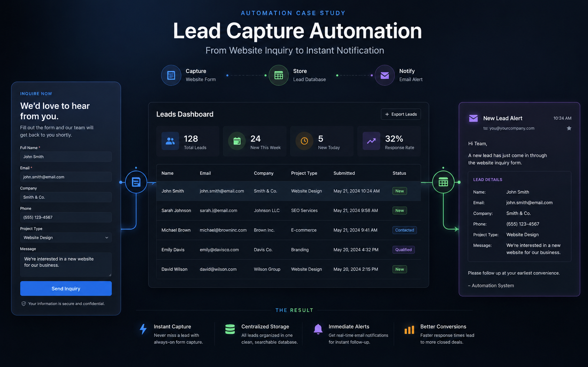
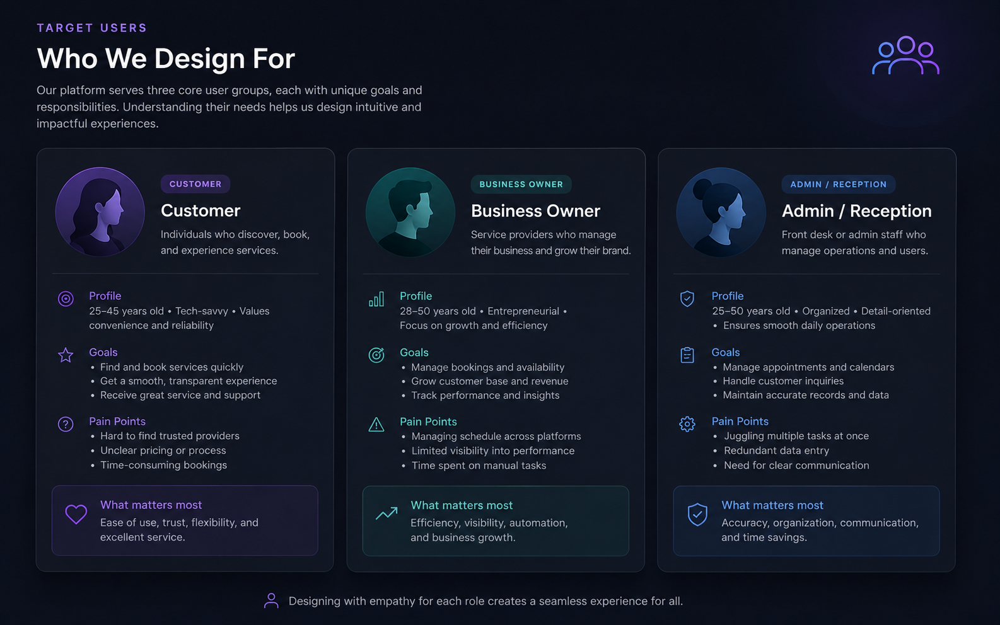
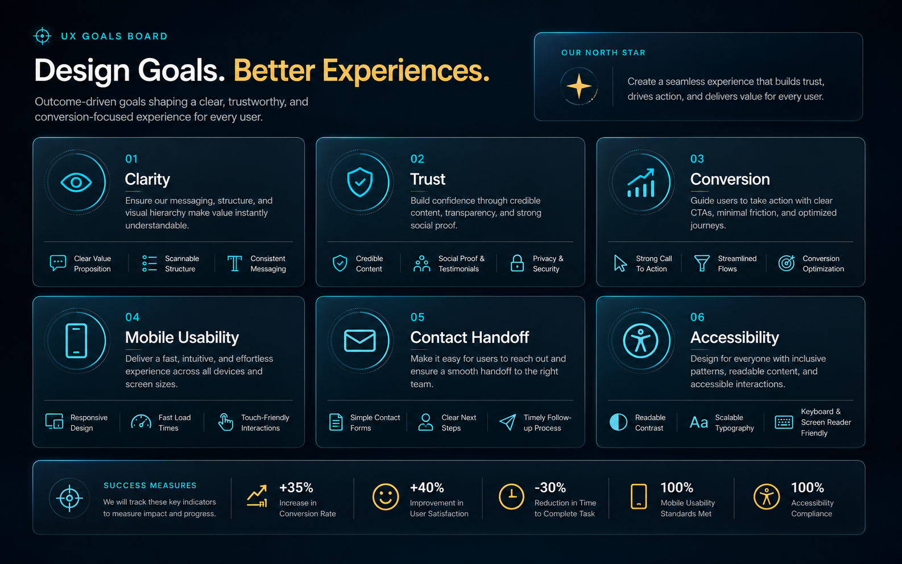
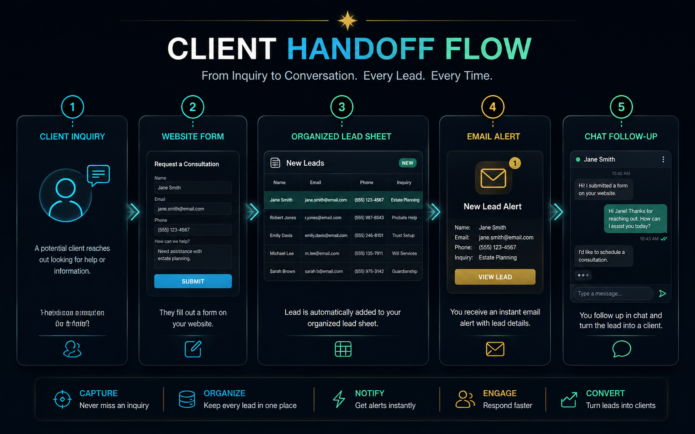

Concept Case Study
Lead Capture Automation Interface
A simple business workflow concept that turns messy inquiries into structured form data, confirmation states, and follow-up handoff.




Problem
Small businesses often receive inquiries across scattered channels and lose leads because follow-up is not organized.
Target Users
Customers submitting requests, business owners, assistants, reception teams, and service providers handling follow-up.
UX Goals
Collect useful details, avoid overwhelming the customer, confirm submission, and make the admin handoff easy to understand.
Design Solution
Clear form fields, structured lead data, success message, Google Sheets-style lead table concept, and email/WhatsApp handoff state.
User Flow
Customer submits the form, receives confirmation, business gets structured details, and the next follow-up action is visible.
Outcome / Value
The concept improves lead reliability without pretending to be a full SaaS platform or complex enterprise automation.